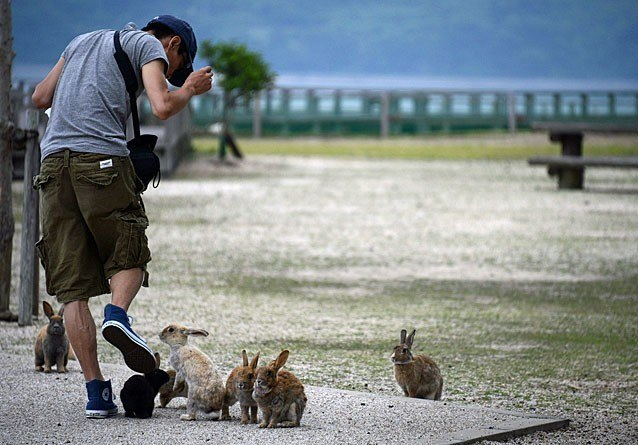

Okunoshima, Japón
Esta isla comúnmente llamada la isla de los conejos se encuentra cerca de Hiroshima. Entre los años 20 y 30, en Okunoshima se asentaba una fábrica secreta de producción de armas químicas, de la que ahora quedan restos y un museo dedicado a la guerra química. Sin embargo, la isla es más conocida por su extensa población de conejos. Es ilegal hacer algún tipo de daño a los concejos, por lo que no tienen ningún tipo de depredador y los conejos son muy simpáticos con los humanos y a menudo se acercan a los visitantes en masa buscando algo para comer. En la isla hay un hotel y un camping para que los turistas que llegan en ferry de otras islas cercanas se hospeden. En la prefectura de Hiroshima, en el área de Takehara, se encuentra una isla muy peculiar y misteriosa que atrae a miles de turistas al año que desean ver a sus pequeños y tiernos habitantes. Su nombre es “Okunoshima” y es conocida coloquialmente como “La isla de los conejos”. Dentro de esta isla de 700 metros cuadrados viven alrededor de 1000 conejos en libertad. Los conejos son amables y afectivos con los visitantes, siempre que estos respeten las reglas establecidas. Okunoshima es un sitio hermoso, con una vista espectacular al mar y abundante vegetación. Los conejos se encuentran esparcidos por todo el territorio, así que mientras se explora el lugar se puede encontrar con muchos de estos bonitos animales. |
 |